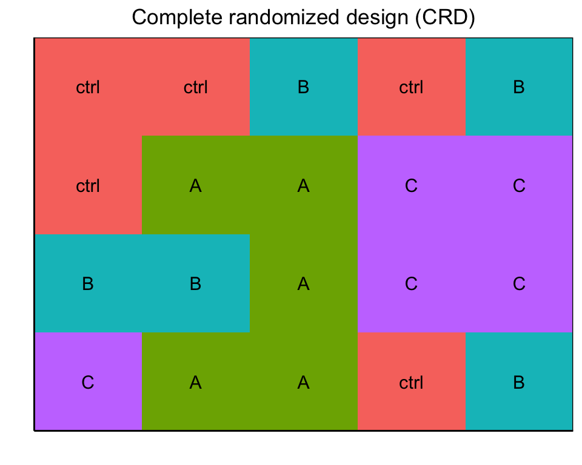
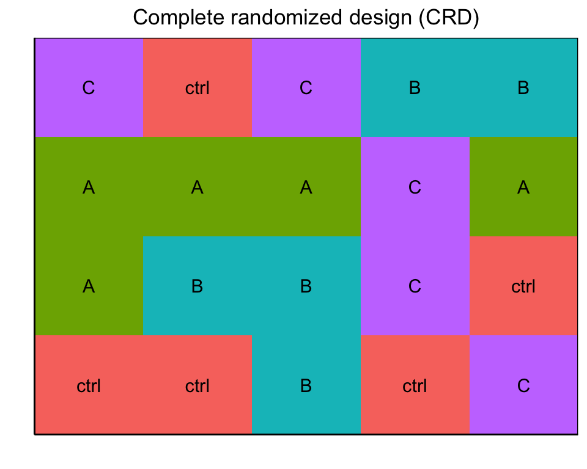
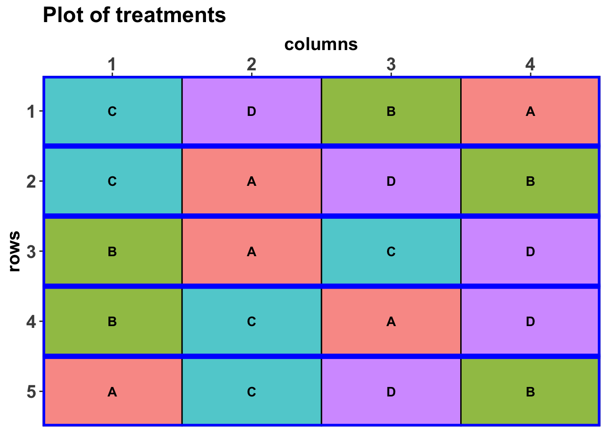

55 Versuchsplanung in R
Version vom August 12, 2023 um 16:58:08

Ein Weiteres umfangreiches Tutorium liefert DSFAIR von P. Schmidt. Hier finden sich auch weiterführende Literatur und weitere Beispiele.
In diesem Kapitel wollen wir uns die Versuchsplanung in R einmal genauer anschauen. Das heißt, dass wir hier den Fokus auf die Funktionen und Pakete legen. In den dann folgenden Kapiteln schauen wir uns die Anwendung auf die gängigen experimentellen Designs in den Agrarwissenschaften an. Wie immer schauen wir erst auf die Anwendung und gehen dann auf die Theorie. Das ist in diesem Kapitel im Besonderen der Fall. Mir geht es hier mehr um die technische Umsetzung als um den eigentlichen Hintergrund.
Wenn wir über die Versuchsplanung und R sprechen, dann kommen wir an folgender Sammlung nicht vorbei.
Nirgendwo sonst findest du so einen Überblick über mögliche Pakete und Anwendungen in R. Wir schauen uns hier dann nur eine Auswahl an Möglichkeiten an. Ich selber habe mir noch nicht alles angeschaut, dass ist einfach zu viel. Je nach Fragestellung bietet sich ja auch ein anderes Paket an. Wir belassen es wie immer bei den Grundlagen. Die Grundlagen sind ja meistens dann ausreichend und manchmal auch schon kompliziert genug.
Jetzt müssen wir doch noch auf den Begriff nested (deu. verschachtelt) kommen. Wenn wir über nested sprechen, dann meinen wir, dass Faktoren ineinander verschachtelt sind. Mit Faktoren meine ich experimentelle Bedingungen. Das klingt jetzt etwas wirr, aber wir machen das mal an einem Beispiel fest. Wir haben den Faktor table und auf dem Tisch stehen die Behandlungen des Faktors trt mit den jeweiligen Pflanzen. Also ist die Behandlung in den Tischen genested. Die Tische mögen in verschiedenen Gewächshäusern mit dem Faktor location stehen, also sind die Tische in den Gewächshäusern genested. Wir haben folgendes Schema vorliegen.
\[ \mbox{Wiederholungen} \xrightarrow[]{nested} \overbrace{\mbox{Behandlungen}}^{f_1} \xrightarrow[]{nested} \underbrace{\mbox{Tische}}_{f_2} \xrightarrow[]{nested} \overbrace{\mbox{Gewächshauser}}^{f_3} \]
Damit haben wir dann aber auch meistens folgende Abhängigkeit von den jeweiligen Beobachtungen untereinander nach der wir dann unser Experiment planen müssen.
\[ \overbrace{\mbox{Gewächshauser}}^{f_3} \xrightarrow[]{beinhaltet\; alle} \underbrace{\mbox{Tische}}_{f_2} \xrightarrow[]{beinhaltet\; alle} \overbrace{\mbox{Behandlungen}}^{f_1} \xrightarrow[]{beinhaltet\; alle} \mbox{Wiederholungen} \]
Okay, das ist jetzt abstrakt. Machen wir das mal konkret mit einem Beispiel mit drei Behandlungen gegen Blattläuse auf jeweils vier Tischen in drei Gewächshäusern. Pro Behandlung nehmen wir fünf Pflanzen. Damit ergibt sich folgendes Schema mit den jeweiligen Anzahlen darübergeschrieben.
\[ \overbrace{\mbox{Gewächshauser}}^{n_g = 3} \xrightarrow[]{beinhaltet\; alle} \underbrace{\mbox{Tische}}_{n_t = 4} \xrightarrow[]{beinhaltet\; alle} \overbrace{\mbox{Behandlungen}}^{n_b = 3} \xrightarrow[]{beinhaltet\; alle} \underbrace{\mbox{Wiederholungen}}_{n_w = 5} \]
Jetzt können wir auch ausrechnen, wie viele Pflanzentöpfe wir brauchen. Wir multiplizieren alle \(n\)-Angaben miteinander und erhalten \(n_{gesamt} = n_g \cdot n_t \cdot n_b \cdot n_w = 3 \cdot 4 \cdot 3 \cdot 5 = 180\) Pflanzen. Jetzt ist immer die Frage, sind das zu viele oder zu wenig? Das wollen wir uns dann am Ende in dem Kapitel zur Fallzahlplanung anschauen. Hier geht es erstmal um die technische Umsetzung.
55.1 Genutzte R Pakete für das Kapitel
Wir wollen folgende R Pakete in diesem Kapitel nutzen.
Am Ende des Kapitels findest du nochmal den gesamten R Code in einem Rutsch zum selber durchführen oder aber kopieren.
55.2 Selbermachen mit expand_grid()
Wenn wir uns das experimentelle Design selber zusammen programmieren können wir auf das tidyverse Paket zurückgreifen und haben dann ein schöneres Leben. Wir müssen zwar etwas mehr beachten, aber dafür sind wir auch sehr viel mehr flexibel. Deshalb stelle ich für die einfacheren Designs in den folgenden Kapiteln auch immer den Code zum Selbermachen vor. Hier gibt es jetzt einmal die Grundidee am Complete randomized design (CRD). Wir gehen immer von einem balancierten Design aus, dass heißt in jeder Behandlungsgruppe sind gleich viele Beobachtungen.
Nehmen wir folgendes simples Modell. Wir wollen untersuchen, ob das Trockengewicht drymatter von einer Behandlung trt abhängt. Wir werden uns dann gleich noch entscheiden, wie viele Behandlungsgruppen wir wollen und wie viele Wiederholungen wir pro Behandlungsgruppe nehmen.
\[ drymatter \sim \overbrace{trt}^{f_1} \]
Zentral für unsere Überlegungen ist die Funktion expand_grid(), die es uns einfach erlaubt alle Faktorkombinationen aus zwei oder mehr Vektoren zu erstellen. Wir haben im Folgenden im Vektor a die Zahlen 1 bis 3 und in dem Vektor b die Zahlen 1 und 2. Jetzt wollen wir alle Kombinationen von a und b haben und nutzen dafür expand_grid().
expand_grid(a = 1:3, b = 1:2)# A tibble: 6 × 2
a b
<int> <int>
1 1 1
2 1 2
3 2 1
4 2 2
5 3 1
6 3 2Jetzt einmal konkreter auf unser Beispiel angewandt. Wir wollen vier Behandlungsgruppen und in jeder Behandlungsgruppe fünf Wiederholungen rep. Dann benennen wir noch die Behandlungen mit ctrl, A, B und C. Unsere Wiederholungen kriegen die Zahlen von 1 bis 5. Dann ergänzen wir noch eine Pflanzenidentifizierungsnummer pid über die wir dann später randomisieren können. Wenn du willst, kannst du dir dann über select() noch die Spalten sauber sortieren.
crd_long_tbl <- expand_grid(trt = 1:4, rep = 1:5) %>%
mutate(trt = factor(trt, labels = c("ctrl", "A", "B", "C")),
rep = factor(rep, labels = 1:5),
pid = 1:n()) %>%
select(pid, everything())
crd_long_tbl# A tibble: 20 × 3
pid trt rep
<int> <fct> <fct>
1 1 ctrl 1
2 2 ctrl 2
3 3 ctrl 3
4 4 ctrl 4
5 5 ctrl 5
6 6 A 1
7 7 A 2
8 8 A 3
9 9 A 4
10 10 A 5
11 11 B 1
12 12 B 2
13 13 B 3
14 14 B 4
15 15 B 5
16 16 C 1
17 17 C 2
18 18 C 3
19 19 C 4
20 20 C 5 Dann kannst du dir die Datei mit der Funktion write_xlsx() aus dem R Paket writexl raus schreiben und dann entsprechend mit deinen Messwerten für das Trockengewicht ergänzen.
crd_long_tbl %>%
write_xlsx("template_sheet.xlsx")Wenn du für deine zwanzig Pflanzen noch ein Randomisierungmuster brauchst, dann empfehle ich dir die Folgende schnelle Art und Weise. Du nimmst die Pflanzen ID’s von 1 bis 20 und mischt die Zahlen einmal mit der Funktion sample() durch. Dann erstellst du dir als dein Grid für deine Pflanzen mit einer \(4 \times 5\)-Matrix und pflanzt nach diesem Grid die Pflanzen ein.
crd_long_tbl$pid %>%
sample() %>%
matrix(nrow = 4, ncol = 5,
dimnames = list(str_c("Reihe", 1:4, sep = "-"),
str_c("Spalte", 1:5, sep = "-"))) Spalte-1 Spalte-2 Spalte-3 Spalte-4 Spalte-5
Reihe-1 5 16 2 19 12
Reihe-2 3 1 20 13 11
Reihe-3 18 9 6 10 4
Reihe-4 14 8 15 7 17Es gibt natürlich noch andere Möglichkeiten, aber das ist jetzt die schnellste Variante ein gutes Randomisierungsmuster hinzukriegen.
55.3 Das R Paket agricolae
Für die Erstellung von komplexeren experimentellen Designs führt kein Weg an dem R Paket agricolae vorbei. Bei den einfacheren Designs ist es dann so eine Sache, ob du dir mit agricolae einen Gefallen tust oder eher die Sache sehr stark verkomplizierst. Ich würde dir bei den einfacheren Designs empfehlen einfach exoand_grid() wie oben beschrieben zu nutzen. Das ist einfacher und funktioniert auch gut, wenn nicht gar besser. Darüber hinaus ist die Hilfe der Funktionen teilweise etwas sehr mager und die Weiterentwicklung eher fraglich. Für das Paket agricolae gibt es zwe i ziemlich identische Tutorien einmal das Tutorium agricolae als PDF und einmal mit Beispielen von der Webseite Experimental Designs with agricolae. Beide Tutorien sind identisch, dass eine ist ein PDF und das andere eine Webseite.
So dann schauen wir uns mal die gängigen Parameter bei der Erstellung des Designs mit den Funktionen von agricolae an:
-
series: legt fest wie viele Zeichen plus 1 die Nummerierung der Zeile haben soll. Wenn wirseries = 2setzen, dann zählen wir mit 101, 102, 203 usw. die Zeilen hoch. Im Falle eines vollständig randomisierten Designs ist die Nummerierung fortlaufend. -
seed: der Seed für die Zufallsgenerierung und sein Wert ist eine beliebige Zahl. -
kinds: die Methode der Zufallsgenerierung, standardmäßig “Super-Duper” und interessiert uns hier nicht besonders. -
randomization: Soll das Design randomisiert werden?
Und Folgendes kommt dann bei agricolae als Ausgabe raus. Zwar nicht immer, aber das ist der grobe Überblick.
-
parameters: die Eingabe zur Generierung des Designs. Wir erhalten also nochmal unsere Werte wieder, die wir eingegeben haben. Meistens nicht von Interesse. -
book: Das Feldbuch indem das wichtige drin steht, nämlich unsere generiertes Faktordesign. -
statistics: die Informationsstatistiken das Design, die wir noch zusätzlich kriegen. Diese nutzen wir nur für komplexere Designs. -
sketch: Verteilung der Behandlungen im Feld. Wird uns nicht immer wiedergeben und ist als Hilfe für die direkte Anwendung gedacht.
Wenn wir Parzellen anlegen, dann erhalten wir auch noch folgende Informationen wieder. Dfür muss dann aber auch das experimentelle Design entsprechende Parzellen haben.
-
zigzag: ist eine Funktion, die es erlaubt die Verteilung der Beobachtungen entlang der Parzellen zu kontrollieren. Meistens ist es etwas zu viel des Guten, aber gut das du hier noch Änderungen vornehmen kannst. -
fieldbook: Ausgabe des Zickzacks aus der obigen Funktion und das entsprechende Feldbuch mit dem Design.
Es gibt eine weitreichende Anzahl an design.*-Funktionen für sehr viele Designs. Wir schauen uns also jetzt einmal als Beispiel die Funktion design.crd() an um ein complete randomized design zu erstellen. Der Vorteil der Funktion ist hier, dass wir verschiedene Anzahlen von Individuen in die Generierung des Designs nehmen können. Also zum Beispiel drei Pflanzen in der Kontrolle und dann jeweils fünf Pflanzen in der Behandlung. Weil es aber dann meistens nicht auf die zwei Kontrollpflanzen weniger ankommt, machen wir immer ein balanciertes Design. Wenn es aber unbalanciert sein soll, dann ist es natürlich hier einfacher umzusetzen als mit expand_grid().
In den Designfunktionen haben wir meistens einmal die Option für die Behandlung trt sowie für die Wiederholungen r. Leider ist es so, dass je nach Design die Option r mal die Wiederholungen oder aber die Blöcke beschreibt. Schau dir da bitte die Beispiele an. Im Weiteren haben wir dann noch die serie Option, die einfach die Nummerierung auf Hunderter setzt.
Nun ist es so, dass die Funktion den Spaltennamen der Behandlung auf c("ctrl", "A", "B", "C") setzt anstatt auf einen Namen. Dafür müssten wir dann einen Vektor mit Namen übergeben, aber das wird mir dann irgendwann zu wirr. Deshalb nenne ich dann alle Spalten nochmal mit der Funktion set_names() entsprechend um und erschaffe mir einen tibble.
crd_book <- crd_obj %>%
pluck("book") %>%
as_tibble() %>%
set_names(c("plots", "r", "trt"))
crd_book# A tibble: 18 × 3
plots r trt
<dbl> <int> <chr>
1 101 1 C
2 102 2 C
3 103 1 B
4 104 2 B
5 105 1 A
6 106 1 ctrl
7 107 2 A
8 108 3 C
9 109 4 C
10 110 3 B
11 111 2 ctrl
12 112 3 A
13 113 5 C
14 114 4 B
15 115 4 A
16 116 3 ctrl
17 117 5 B
18 118 5 A Wir haben kein sketch aus der Funktion. Daher müssen wir uns selber überlegen, wie wir dann die Pflanzen anordnen würden. Darüber hinaus ist die Ordnung wild, ich sehe da eher weniger Struktur in der Ausgabe, als das mir es hilft. Aber dazu dann mehr in den folgenden Kapiteln. Hier ist es erstmal die stumpfe Durchführung am Beispiel des complete randomized design.
Das Paket agricolae hat keine interne Möglichkeit sich die Designs zu visualisieren.
agricolae in andere R Pakete
In der Abbildung 55.2 sehen wir die Problematik mit der fehlenden Einbindung von agricolae in das Paket desplot. Die Abbildung ist einfach suboptimal. Da wir in dem Feldbuch von agricolae keine Zeilen und Spalten der Position wiederbekommen, können wir das Design nicht sauber darstellen. Leider liefert uns die Funktion design.crd() auch keine Verteilung der Behandlungen im Feld, so dass wir hier alles selber bauen müssten. Dann geht es mit expand_grid() schneller.
ggdesplot(data = crd_book, flip = TRUE,
form = trt ~ r + plots,
text = trt, cex = 1, shorten = "no",
main = "Field layout", show.key = F) 
agricolae durch desplot. Da agricolae für durch die Funktion design.crd() keine Positionen in Zeile und Spalte liefert kann nur ein suboptimaler Plot erstellt werden.
55.4 Das R Paket desplot
Plotting field maps with the desplot package
Jetzt müssen wir noch unser Grid ergänzen auf dem wir unsere Pflanzen stellen wollen. In unserem Fall wollen wir unsere Pflanzen auf vier Zeilen row und fünf Spalten col stellen. Das bietet sich bei zwanzig Pflanzen dann ja auch an.
crd_grid <- expand_grid(row = 1:4, col = 1:5)
crd_grid # A tibble: 20 × 2
row col
<int> <int>
1 1 1
2 1 2
3 1 3
4 1 4
5 1 5
6 2 1
7 2 2
8 2 3
9 2 4
10 2 5
11 3 1
12 3 2
13 3 3
14 3 4
15 3 5
16 4 1
17 4 2
18 4 3
19 4 4
20 4 5Jetzt sortieren wir unsere Daten nach den Individuen und durchmischen damit auch gleichzeitig die Zuordnung von den Behandlungen. Dann ergänzen wir unser Grid für die Pflanzenpositionen durch die Funktion bind_cols().
crd_long_tbl <- crd_long_tbl %>%
mutate(id = sample(1:n()))crd_plot_tbl <- crd_long_tbl %>%
arrange(id) %>%
bind_cols(crd_grid)
crd_plot_tbl # A tibble: 20 × 6
pid trt rep id row col
<int> <fct> <fct> <int> <int> <int>
1 1 ctrl 1 1 1 1
2 5 ctrl 5 2 1 2
3 11 B 1 3 1 3
4 2 ctrl 2 4 1 4
5 19 C 4 5 1 5
6 6 A 1 6 2 1
7 14 B 4 7 2 2
8 12 B 2 8 2 3
9 17 C 2 9 2 4
10 4 ctrl 4 10 2 5
11 9 A 4 11 3 1
12 7 A 2 12 3 2
13 8 A 3 13 3 3
14 18 C 3 14 3 4
15 10 A 5 15 3 5
16 16 C 1 16 4 1
17 3 ctrl 3 17 4 2
18 20 C 5 18 4 3
19 13 B 3 19 4 4
20 15 B 5 20 4 5In der Abbildung 55.1 sehen wir einmal unser Design dargestellt. Wir sehen, dass wir die vier Behandlungen mit den fünf Wiederholungen zufällig über den ganzen Tisch verteilt haben.
ggdesplot(data = crd_plot_tbl,
form = trt ~ col + row,
text = trt, cex = 1, show.key = FALSE,
shorten = "no",
main = "Complete randomized design (CRD)")
55.5 Das R Paket dae
Ein weiteres R Paket, was es ermöglicht komplexere Experimente zu designen ist das R Paket dae. Über die Hilfeseite dae: Functions Useful in the Design and ANOVA of Experiments kannst du dir das Tutorium anschauen.
Das R Paket dae hat für die Faktorerstellung in Gruppen eine eigne Funktion fac.gen(). Mit der Funktion können wir recht einfach Faktoren generieren. Bei einfachen Beispielen wie dem randomized complete block design (RCBD) bräuchten wir die Funktion eigentlich nicht, aber hier einmal zur Demonstration.
Wir können auch mit der Funktion expand_grid() von weiter oben relativ einfach das Pflanzengrid nachbauen. Da brauchen wir eigentlich nicht die Funktion fac.gen(). In den komplexeren Beispielen ist die Funktion dann aber hilfreich.
rcbd_sys <- expand_grid(rows = 1:5,
columns = 1:4) %>%
mutate(treatments = factor(columns, labels = LETTERS[1:4]),
rows = as_factor(rows),
columns = as_factor(columns))rcbd_lay <- designRandomize(allocated = rcbd_sys["treatments"],
recipient = rcbd_sys[c("rows", "columns")],
nested.recipients = list(columns = "rows"),
seed = 1134)
rcbd_lay rows columns treatments
1 1 1 C
2 1 2 D
3 1 3 B
4 1 4 A
5 2 1 C
6 2 2 A
7 2 3 D
8 2 4 B
9 3 1 B
10 3 2 A
11 3 3 C
12 3 4 D
13 4 1 B
14 4 2 C
15 4 3 A
16 4 4 D
17 5 1 A
18 5 2 C
19 5 3 D
20 5 4 B-
allocated: Ist meistens der Faktor unserer Behandlung und damit der zugeordnete Faktor. Das heißt, wir wollen diesen Faktor auf das Grid aus Zeilen und Spalten verteilen bzw. zuordnen. In unserem Fall die vier Behandlungen. -
recipient: Ist der Faktor, dem die Behandlungsgruppen zugeordnet werden. Damit auch das Grid, was den Behandlungsfaktor empfängt. Wir haben hier also Zeilenrowsund Spaltencolumnsin denen unsere Behandlung zufällig verteilt werden soll. -
nested.recipients: Hier wird angegeben, in welcher Abhängigkeitsstruktur das Grid vorliegt. Unsere Blöcke sind in diesem Fall über die Zeilen orientiert.
designGGPlot(rcbd_lay, labels = "treatments",
row.factors = "rows", column.factors = "columns",
cellalpha = 0.75,
blockdefinition = cbind(1, 4))
55.6 Das R Paket agridat
Eine wunderbare Sammlung von Datensätzen aus dem Bereich der Agarwissenschaften liefert das R Paket agridat. Über die Hilfeseite agridat: Agricultural Datasets findest du dann einmal einen gesamten Überblick und auch die Informationen über einige ausgewählte Datensätze aus Dutzenden von Datensätzen. Alle Datensätze der wichtigen Bücher zu dem experimentellen Designs sind dort eigentlich enthalten und einmal kuratiert.